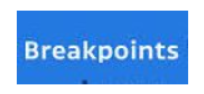
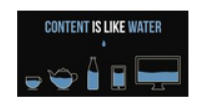
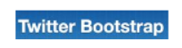

Hay tres tipos de diseños o layouts a la hora de hacer maquetación web. Fixed: Donde la anchura de la página es fija y es expresada en pixels. Elastic: Donde la anchura de la página es fija y es expresada en la unidad em (múltiplos del tamaño de letra). Fluid/Liquid/Relative: Donde la anchura de la página depende del tamaño del Viewport del usuario y se expresa en porcentajes (%).

Media-queries son un módulo de CSS3 que nos permite adaptar al representación del contenido a las características del dispositivo… Síntaxis de las Media-Queries Las media queries son expresiones en las que indicamos un tipo de medio y una consulta en relación a las características del dispositivo como alto, ancho e incluso color:

width | min-width | max-width height | min-height | max-height orientation (landscape / portrait) aspect-ratio | min-aspect-ratio | max-aspect-ratio color | min-color | max-color Esta condiciones se pueden combinar y modificar utilizando claúsulas como: And Not All Only